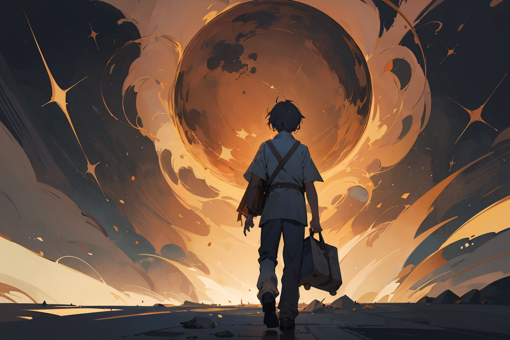

Capitulo 4
Después de explorar cada rincón del jardín encantado y entablar amistad con sus habitantes mágicos, Mateo sintió que el tiempo se deslizaba como hilos de oro entre sus dedos. Con la llave mágica en mano, decidió regresar a su hogar, llevando consigo las experiencias que transformaron su corazón.
Al cruzar el portal, el jardín encantado se desvaneció lentamente, pero su esencia perduraba en la memoria de Mateo. Se encontró de nuevo en su pradera conocida, pero ahora veía cada flor con ojos renovados, sabiendo que la magia estaba presente en lo cotidiano.
Las enseñanzas de los seres mágicos resonaban en su mente, recordándole la importancia de la conexión con la naturaleza, la alegría de explorar lo desconocido y la magia que yace en la simplicidad de la vida. La llave mágica se desvaneció en su mano, pero su influencia perduró como un faro de sabiduría.
La moraleja que Mateo llevó consigo de vuelta a casa era clara: en cada rincón, incluso en lo aparentemente ordinario, yace un toque de magia. La llave que abre los portales a nuevos mundos está dentro de nosotros mismos, en nuestra capacidad de asombrarnos, aprender y apreciar la maravilla que nos rodea.
Así, con un corazón lleno de gratitud y conocimiento, Mateo compartió sus historias con aquellos que lo rodeaban, inspirando a otros a descubrir la magia que existe en cada jardín, por más común que parezca. Y así, el jardín encantado se expandió, no solo en la tierra que cubría, sino en los corazones de aquellos que, como Mateo, aprendieron a ver el mundo con ojos de asombro y gratitud.
